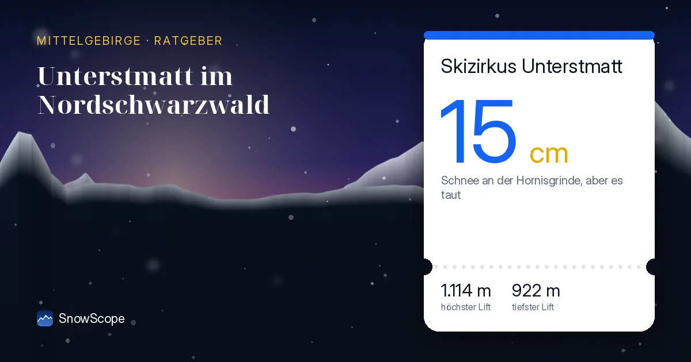

Unterstmatt im Nordschwarzwald: 15 cm Schnee an der Hornisgrinde, aber es taut
Am Skizirkus Unterstmatt an der Schwarzwaldhochstraße liegen heute 15 cm Schnee im oberen Bereich, mehr als in vielen Jahren um diese Zeit: Auf 1.018 m sind an einem normalen 27. November nur 0 cm. Bis Montag schrumpft die Decke allerdings auf etwa 11 cm, weil kein Neuschnee kommt.
Die Live-Schneeprognose für Skizirkus Unterstmatt in der SnowScope-AppSchneehöhen, Pulverschnee-Alarme und 3D-Karte, gratis.
Die Lage heute
Die Lifte an der Hornisgrinde liegen zwischen 922 m und 1.114 m. Der Schnee stammt aus der vergangenen Woche; seit Mittwoch ist kein Neuschnee mehr gefallen, und die Decke ist von 17 cm am Mittwoch auf heute 15 cm zurückgegangen.
In den nächsten sieben Tagen erwarten wir keinen nennenswerten Neuschnee. Ob die Lifte am Wochenende laufen, entscheidet der Betreiber nach der Pistenlage; für Rodler und Winterwanderer reicht der Schnee vielerorts noch.
Wie oft reicht es im Nordschwarzwald?
Der Nordschwarzwald ist ein Mittelgebirge mit wechselhaftem Winter. Auf 1.018 m lag an einem 27. November nur in 48 % der vergangenen Winter überhaupt Schnee, und auch an Weihnachten nur in 61 %. Die übliche Höhe am 25. Dezember liegt bei 4 cm; in einem von vier Wintern sind es mehr als 11 cm.
Darum gilt im Nordschwarzwald: Wenn Schnee liegt, sofort hinfahren. Gute Skitage kommen oft in kurzen Fenstern nach einem Kaltlufteinbruch, und ein Föhn- oder Regentag kann sie wieder beenden.
Der Vergleich mit dem Feldberg
Der Feldberg im Südschwarzwald liegt höher und hat heute 12 cm oben. Auch dort ist kein Neuschnee in Sicht. Der übliche Weihnachtswert am Feldberg ist 8 cm auf 1.189 m, und in 7 % der Winter lagen zu Neujahr mehr als 50 cm, was zeigt, wie knapp der Schwarzwald selbst in seinen höchsten Lagen ist.
Häufige Fragen
Ist Unterstmatt ein Skigebiet für einen ganzen Tag? Eher für einen halben Tag oder einen Abend: Die Pisten sind kurz, ideal für Kinder und Wiedereinsteiger. Wer mehr will, kombiniert es mit Mehliskopf oder den Liften am Seibelseckle.
Wann ist im Nordschwarzwald die beste Schneezeit? Meist im Januar und Februar, wenn längere Kälteperioden die Decke halten. Der Dezember ist ein Glücksspiel: Am 15. Dezember lag auf 1.018 m nur in 63 % der Winter überhaupt Schnee.
Was tun, wenn die Lifte stehen? Winterwandern auf den Höhenwegen, Schneeschuhtouren am Grindenpfad und Rodeln an der Hornisgrinde sind oft auch mit wenig Schnee möglich.
Die Hornisgrinde und ihr Wetter
Die Hornisgrinde ist der höchste Berg des Nordschwarzwalds und bekommt den Westwind aus der Rheinebene direkt ab. Dadurch fällt hier mehr Niederschlag als im Umland, im Winter oft als Schnee, aber die gleichen Westlagen bringen auch milde Luft und Regen. Ein Wintertag kann deshalb am Morgen tief verschneit beginnen und am Nachmittag tauen.
Für Skifahrer heißt das: kurze Wege, spontane Entscheidungen. Die Lifte an der Schwarzwaldhochstraße sind darauf eingestellt und öffnen oft kurzfristig, sobald genügend Schnee liegt.
Die Zahlen zeigen, wie selten ein Start wie dieser ist: In einem von vier Wintern liegen am 27. November auf 1.018 m mehr als 9 cm, heute sind es 4 cm dort und 15 cm an den oberen Liften. Wer in den nächsten Tagen fährt, erlebt also einen ungewöhnlich frühen Winter im Nordschwarzwald, aber eben einen, der ohne Nachschub nicht lange hält.
Tipps für Unterstmatt
Der Skizirkus ist ein klassisches Familien- und Feierabendgebiet: kurze Schlepplifte, eine Abendbeleuchtung an manchen Hängen und Parkplätze direkt an der Hochstraße. Aus Baden-Baden und Bühl ist man in einer halben Stunde oben, aus Karlsruhe in gut einer Stunde.
Die Schwarzwaldhochstraße kann bei Schnee glatt sein; Winterreifen sind Pflicht, und an schönen Wochenenden sind die Parkplätze früh voll.
Aktuelle Schneewerte: Unterstmatt Schneehöhe und Feldberg Schneehöhe.
Tipps für Skifahrer
- Dieses Wochenende: früh am Samstag fahren, solange der Schnee noch kalt und griffig ist.
- Vorher die Liftzeiten prüfen; im Nordschwarzwald entscheidet der Betreiber kurzfristig.
- Für Langlauf und Winterwandern ist die Hochstraße oft länger gut als die Pisten.
- Mehr zu den deutschen Gebieten: welche Skigebiete im Dezember den Schnee halten und die Seite Deutschland.
Zu diesen Zahlen
Schneewerte: die SnowScope-Schneekarte und -Vorhersage von heute und unsere Bilanz von 46 vergangenen Wintern pro Skigebiet (eine Schätzung für die Fläche, keine Meldung des Skigebiets).
Offizielle Lawinenlageberichte: EAWS – European Avalanche Warning Services
Diesen Bericht zitieren
Für Forschung, Lehre oder Presse: Zahlen und Grafiken sind unter CC BY 4.0 mit dieser Quellenangabe frei nutzbar.
SnowScope (2026), Unterstmatt im Nordschwarzwald: 15 cm Schnee an der Hornisgrinde, aber es taut, https://snowscope.app/blog/de/2026/11/unterstmatt-schwarzwald-schnee-ende-november-2026-hornisgrinde-skilifte.html, abgerufen am 2026-11-27
SnowScope (Atlas Labs). (2026, November 27). Unterstmatt im Nordschwarzwald: 15 cm Schnee an der Hornisgrinde, aber es taut. SnowScope snow reports. https://snowscope.app/blog/de/2026/11/unterstmatt-schwarzwald-schnee-ende-november-2026-hornisgrinde-skilifte.html
BibTeX
@misc{snowscope2026unterstmattschwarzwaldsc,
author = {{SnowScope (Atlas Labs)}},
title = {Unterstmatt im Nordschwarzwald: 15 cm Schnee an der Hornisgrinde, aber es taut},
year = {2026},
month = nov,
howpublished = {\url{https://snowscope.app/blog/de/2026/11/unterstmatt-schwarzwald-schnee-ende-november-2026-hornisgrinde-skilifte.html}},
note = {Published 2026-11-27 17:04 UTC; accessed 2026-11-27}
}· CC BY 4.0 · Methoden, Daten und Werkzeuge →
Skizirkus Unterstmatt: Schnee und Temperatur nach Höhe, dieser Winter vs letzter (Werkzeuge) →
Skizirkus Unterstmatt folgen
Gratis: eine Nachricht, wenn Neuschnee kommt, und jeden Morgen die Vorhersage.